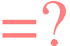

|
|
|
Sponsored Link •
|
Summary
What does it mean that two identifiers are equal in a lexically scoped language with hygienic macros? This last episode of part V tries to answer the question, by discussing three different concepts of identifier equality.
|
Advertisement
|
This is the last episode of part V of my Adventures. In the latest episodes I have discussed various technicalities of Scheme macros, such as the concepts of syntax object, hygiene and lexical context. There is still an important subject to be discuss in order to become really proficient with Scheme macros: identifier equality. Equality of identifiers is one of the trickiest things in Scheme.
First of all, identifier equality is a compile-time concept which has nothing to do with the run-time concept of equality between variables. Identifiers are not variables: they are syntax objects with an underlying symbol and an underlying lexical context, which are known statically at compile time. It is possible to know if an identifier is bound or not at compile-time, but the value the identifier will be bound to at run-time is (in general) unknown.
Secondly, there is not a single concept of identifier equality, but different definitions are possible. In this episode I will discuss three different predicates to compare identifiers: symbol-identifier=?, bound-identifier=? and free-identifier=? (the latter two are part of the R6RS standard).
The simplest concept of identifier equality is expressed by the following symbol-identifier=? comparison function (for convenience, I have added the symbol-identifier=? precedure to the (aps lang) library):
(define (symbol-identifier=? id1 id2) (symbol=? (syntax->datum id1) (syntax->datum id2)))
Two identifiers are symbol-identifier=? if they are equal as symbols, once their lexical information has been stripped out.
For instance, symbol-identifier=? can be used to find duplicated names in macros defining name->value tables, such as the static-map macro I discussed in episode 22. Moreover, symbol-identifier=? can be used to reject reserved identifiers (you may need such functionality if are building a mini-language on top of Scheme and you want to reject a few identifiers as language keywords), as in the following example:
(def-syntax (check-reserved id) (syntax-violation 'check-reserved "Reserved identifier" #'id) (exists (cut symbol-identifier=? #'id <>) (list #'reserved1 #'reserved2)) 'non-reserved)
(check-reserved id) will raise a syntax-violation if id is one of the keyword reserved1 or reserved2.
symbol-identifier=? is simple and easy to understand, but it cannot be used in all situations. Consider for instance the very first macro I wrote, in episode 9:
(def-syntax (multi-define (name1 name2 ...) (value1 value2 ...)) #'(begin (define name1 value1) (define name2 value2) ...))
It is quite common to write macros defining multiple bindings, such as multi-define. multi-define as written does not perform any check for duplicated identifiers, so that it relies on the standard behavior of R6RS scheme, raising an error. However, the standard behavior only applies to programs and scripts, whereas the REPL is quite free to behaves differently and indeed it does in most implementations:
> (multi-define (a a) (1 2)); in Ikarus, Ypsilon, ... a 2
(in the REPL latter definitions override previous definitions). If you are unhappy with that, you can introduce a bound-identifier=? check and raise a custom exception:
(def-syntax (multi-define (name1 name2 ...) (value1 value2 ...))
#'(begin (define name1 value1) (define name2 value2) ...)
(distinct? bound-identifier=? #'(name1 name2 ...))
(syntax-violation 'multi-define "Found duplicated identifier in"
#'(name1 name2 ...)))
Two identifiers are equal according to bound-identifier=? only if they have the same name and the same marks. The name is misleading since the arguments of bound-identifier=? are not required to be bound identifiers; a better name would be strict-identifier=?.
You can check that multi-define correctly reject duplicated identifiers:
> (multi-define (a a) (1 2))
Unhandled exception
Condition components:
1. &who: multi-define
2. &message: "Found duplicated identifier in"
3. &syntax:
form: (a a)
subform: #f
In this simple example using symbol-identifier=? would work too. However this is not the geneal case. Consider for instance the following macro expanding to multi-define:
(def-syntax (multi-define2 id value) #'(multi-define (id id2) (value 'dummy)))
multi-define2 introduces a dummy identifier id2. Had we defined multi-define in terms of symbol-identifier=?, calling multi-define2 with argument id equal to id2 would have generated a spurious name clash. Fortunately, since we defined multi-define in terms of bound-identifier=?, nothing bad happens:
> (multi-define2 id2 1) id2 1
bound-identifier=? works in this case because the identifier id2 introduced by the macro has different marks from the identifier id2 coming as an argument.
bound-identifier=? is not good for every circumstance. Consider for instance the following variation of multi-define, featuring a literal keyword as:
;; not checking for duplicated identifiers here
(define-syntax multi-def
(syntax-rules (as)
((multi-def (name as value) ...)
(begin (define name value) ...))))
This work, but the error messages could stand some improvement. For instance, if an user misspells the infix identifier as, she gets a generic "invalid syntax" error, whereas we would like to provide a customized error message showing the misspelled literal identifier. Using bound-identifier=? we could try to solve the problem as follows:
(def-syntax (multi-def-bad (name as_ value) ...)
#'(begin (define name value) ...)
(for-all (lambda (id)
(when (not (bound-identifier=? id #'as))
(syntax-violation
'multi-def-bad "Offending infix syntax (expected `as')" id)))
#'(as_ ...)))
Unfortunately this solution does not work at all, since it raises an error even when the as identifiers are spelled correctly:
> (multi-def-bad (x as y) (1 as 2))
Unhandled exception
Condition components:
1. &who: multi-def-bad
2. &message: "Offending infix syntax (expected `as')"
3. &syntax:
form: as
subform: #f
4. &trace: #<syntax as>
The reason is that as is not bound-identifier=? to #'as. We need a less strict comparison predicate. To this aim the Scheme standard provides another equality procedures for identifiers, free-identifier=?, which however is not quite right.
free-identifier=? is the most complicated equality predicate. I find its description in the R6RS document particularly confusing and the name is misleading since the arguments of free-identifier=? are not required to be free identifiers. A better name would be lax-identifier=?. Two identifiers are free-identifier=? if
In implementations with full phase separation, the identifiers must also be both bound/unbound in the same phase. In all other cases the two identifiers are not free-identifier=?. Here is an example:
> (import (only (aps list-utils) range)) > (import (rename (aps list-utils) (range r))) > (free-identifier=? #'r #'range) #t
Notice that both symbol-identifier=? and bound-identifier=? would fail to recognize the identity of range and r in this case.
It is important to know about free-identifier=? because in macros with literal identifiers the literal identifiers are compared by using it, internally. That explain a behavior which can be quite surprising.
Consider the macro multi-def defined in the previous paragraph. This works:
> (let () (multi-def (x as 1) (y as 2)) (list x y)) (1 2)
But this does not work:
> (let ((as 2))
(multi-def (x as 1) (y as 2))
(list x y))
Unhandled exception
Condition components:
1. &message: "invalid syntax"
2. &syntax:
form: (multi-def (x as 1) (y as 2))
subform: #f
3. &trace: #<syntax (multi-def (x as 1) (y as 2))>
That looks surprising, but it is not once you realize that internally literal identifiers are compared via free-identifier=?. In the second example as is bound, and therefore it is not free-identifier=? to the literal identifier #'as, which is unbound.
The recommended "solution" is to introduce at top level some dummy definitions for the literal identifiers you are going to use in your macro, and to export them. Following this policy, the R6RS document defines a set of special macros, _, ..., else and =>, which lives in the global namespace and are available to all R6RS programs.
Such macros are used as auxiliary syntax in various special forms, like cond and syntax-case; for this reason they are usually called auxiliary keywords. The existence of such global variables makes it impossible to redefine them at top-level in scripts (but it can be done at the REPL); however they can be redefined locally, thus breaking the macros using the auxiliary syntax:
> (let ((else #f)) (cond (else 'something))) > ; does not return something
I think this is fundamentally broken: literal identifiers should be a concept internal to the macro and they should not be exported. The mistake is that the R6RS requires the literal identifiers to be matched via free-identifier=?, whereas they should be matched with symbol-identifier=?. I never understood why the editors decided to use free-identifier=?, perhaps because it makes it possible to rename the identifiers used as literal identifiers, a feature that looks of little utility to me. All in all, I think free-identifier=? is another dark corner of R6RS Scheme.
Have an opinion? Readers have already posted 1 comment about this weblog entry. Why not add yours?
If you'd like to be notified whenever Michele Simionato adds a new entry to his weblog, subscribe to his RSS feed.
 | Michele Simionato started his career as a Theoretical Physicist, working in Italy, France and the U.S. He turned to programming in 2003; since then he has been working professionally as a Python developer and now he lives in Milan, Italy. Michele is well known in the Python community for his posts in the newsgroup(s), his articles and his Open Source libraries and recipes. His interests include object oriented programming, functional programming, and in general programming metodologies that enable us to manage the complexity of modern software developement. |
|
Sponsored Links
|